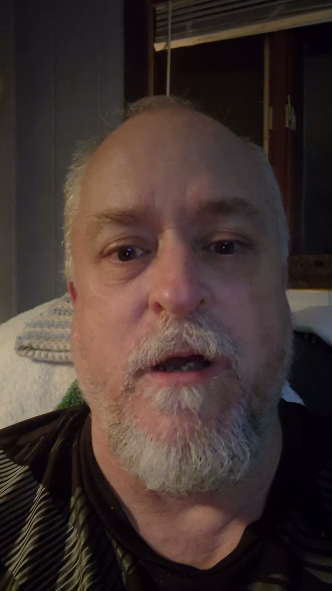

God's in the healing business. After two weeks of sickness, Lewis wanted you to hear it from him: he is getting better, and he thanks the Lord for it. In this short message he thanks everyone who prayed, encourages you to pray for the sick people you know, and shares the news — Lord willing, he will be back at the microphone on Monday, recording Surrender, Part 2 for The Hope Connection podcast.
I'm Getting Better — and Monday, Back to Recording
Hey family, this is Lewis. I just want to thank you all for your prayers and your kind words. You know, I'm getting better and I thank the Lord for that and I'm looking forward to Monday. Monday, Lord willing, I'm going to start recording for the Hope Connection podcast. And it's going to be on Surrender, Part 2. And if you've got a chance to listen to the first part, I encourage you to go back and take a listen. And maybe it will encourage you and Lord willing, it will bless you richly. And it's all for God's glory. And just thank Him for His mercy and His grace. And thank Him for just loving you, loving us. And then we can be a part of the church because we are the church. Each and every member serves a special place in the church for the glory of God, according to the will of God.
You know, and God's in the healing business. And sometimes we have to go through things that, you know, so we can depend more on the Lord. And sometimes we get into a situation that we had no way to know where else to turn but to Jesus. And He's always on our side. And He's always there. And He promised never leave us nor forsake us. So, Lord willing, thank you again for your prayers. And Lord willing, once again, I will be starting the new episode starting on Monday. And I thank you all for listening. And I thank you all for just once again for thinking about me.
And pray for this ministry and continue to pray for me and my family because we're all still getting over this sickness. And pray for each other. Those who are sick, you know, I know you probably know someone. Pray for them. And I'm praying for them in Jesus' name. It's all about the Lord and the Lord is good and He's worthy. So thank you once again. God bless you and love you all.
If this encouraged you, share it with someone who needs to hear it today. Remember: no judgement, real hope for wherever you are in life. Come as you are, and Lord willing, leave anchored.